The Problem
Published data stories often favor visual flair over legibility. Radial layouts, overlapping lines, and diverging color ramps look striking, but they make readers decode values through low-accuracy channels like angle, area, and hue. The goal of this project was to redesign three visualizations from data.europa.eu so their primary message could be decoded quickly and accurately.
Each redesign followed the same path: a critique of the original, a quick Excel prototype, class feedback, and a final interactive redesign published on Tableau Public.
| Case | Original | Redesign | Primary encoding |
|---|---|---|---|
| 01 | Employment rates of people with disabilities vs. total population (radial chart) | Dumbbell chart | Position on a common scale + length |
| 02 | How social media use for news varies by age (three multi-line charts) | Bubble matrix | Area, labeled with exact values |
| 03 | Southern coastal regions' summer share of tourists (diverging choropleth) | Choropleth + linked dot plot | Position on a common scale + sequential color |
Design Principles & Process
Every critique and design decision was grounded in four sets of display design concepts.
Elementary perceptual tasks
Cleveland & McGill's ranking of encodings. Position along a common scale is decoded most accurately; angle, area, and color are decoded least accurately.
Clutter & occlusion
Too much visual noise, plus data points that block one another, slows search and hides values.
Data-ink ratio
Tufte's principle: every drop of ink on a graph should carry meaningful information.
Salience, color & Gestalt
Making benchmarks stand out, choosing palettes that fit the data, and using proximity and enclosure to group elements.
Process
Disability Employment Gap
The original figure shows the employment rate of people with disabilities against the total employment rate across EU member states in 2024. It also shows both EU averages and the gap between the two groups for each country.
The Original & Critique
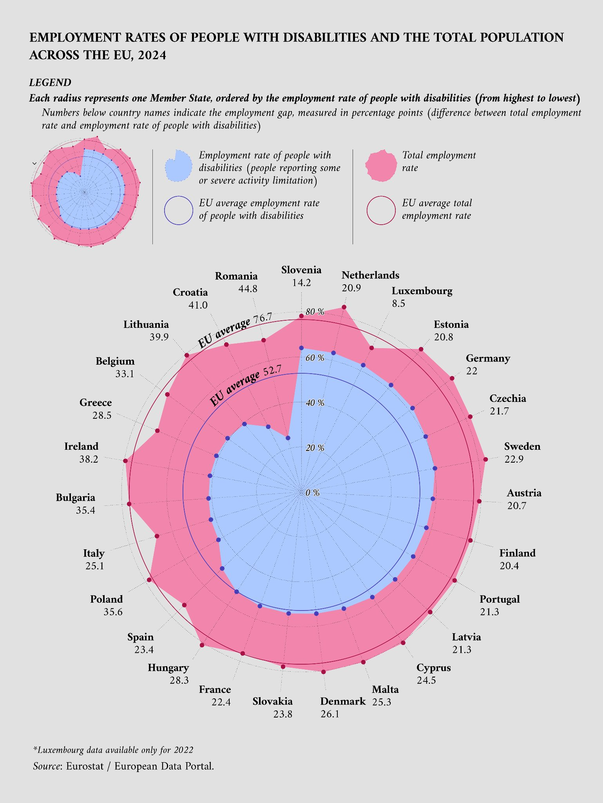
Employment Rates of People with Disabilities and the Total Population Across the EU, 2024. Reprinted from data.europa.eu (2026a). Data from Eurostat (2026a, 2026b).
Values are encoded as positions along a non-aligned radial scale, which Cleveland & McGill rank below aligned scales. That makes it hard to compare gaps between countries, especially those on opposite sides of the circle. The gap itself is the length of a pink band, and those bands aren't aligned either. Because area grows with radius, the outer pink ring also looks bigger than it is.
The ordering doesn't match the message either. The figure is about the employment gap, but countries are sorted by the disability employment rate. The EU-average line has poor salience. The filled areas under each edge add ink without adding information. Circular labels force readers to trace around the figure, and the legend sits far from the data.
Diagnosis: position, length, and area are all used poorly, and the chart's main message (the employment gap) is the hardest thing to read.
Iteration
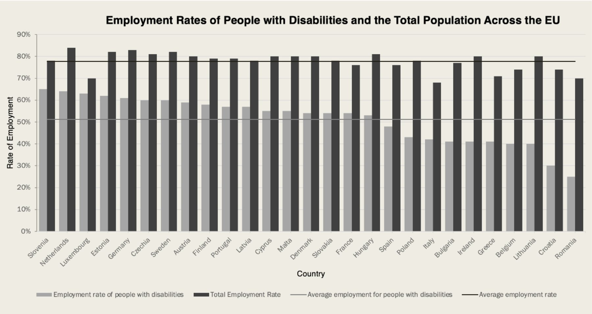
Early redesign prototype designed in Excel.
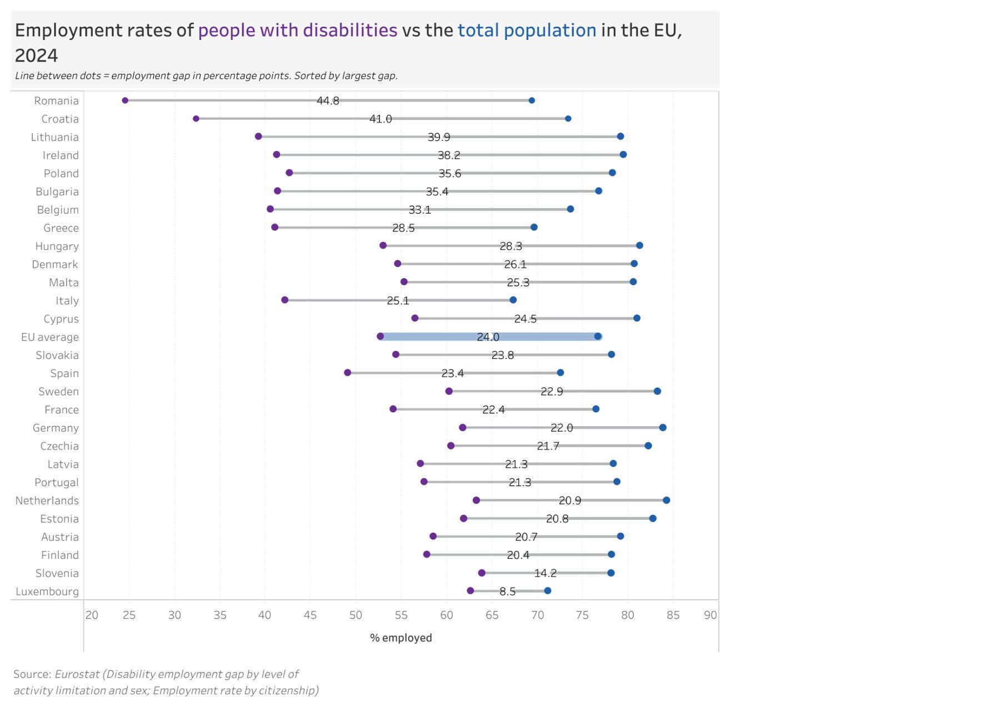
Early Tableau version before final refinements: varying dot sizes, purple dots, small gap circles, no row stripes.
The prototype swapped the radial layout for a flat common scale, sorted the countries, and made the average lines more salient. But the gap still had to be inferred from two bar lengths. The shades of gray were hard to tell apart, and 56 bars made it hard to see which bars belonged to which country.
| Class feedback | Decision |
|---|---|
| Use color instead of grays | Applied Orange and blue replaced the grays for better discriminability, and the colored title doubles as the legend. |
| Make the bars thinner | Adapted The bars became a dumbbell chart. One thin line connects each pair, cutting clutter and linking the two rates. |
| Change the scale to 0–100% | Not applied Dumbbells encode value by position, not length, so a 20–90% range is valid. A zero baseline would add empty space and dilute the gap. |
Final Redesign (Interactive)
Hover over any dumbbell to read that country's exact employment rates.
Open in Tableau Public ↗Design Pivots
The bar prototype became a dumbbell chart so the employment gap, the most important information, could be shown precisely. Countries are now sorted by gap instead of by disability employment rate. The EU average gets its own row in the middle of the chart, replacing two separate reference lines with a single baseline.
Gap values sit on a white circle that's large enough for multi-digit numbers. Dot size was fixed after varying in earlier versions. The disability dot changed from purple to orange for more contrast with blue. Row stripes make it easy to pair each dumbbell with its country. The title acts as the legend, and the subtitle explains how to read the chart.
Design Concepts Applied
Position along a common scale is the primary perceptual task, and length encodes each gap, which is also printed at the center of its line. The thicker, darker EU-average line makes the benchmark salient. Every dot represents data, and the title replaces the legend, which supports the data-ink ratio. Gestalt connection (lines) and enclosure (stripes) group each row. Clutter drops because there's no extra legend, no extra gridlines, and one mark per country instead of two bars.
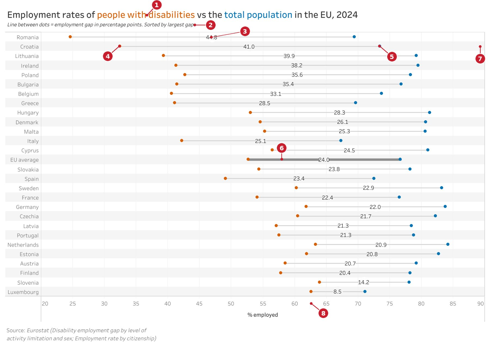
- Title colored to serve as the legend
- Sorted by largest gap
- Gap value on a circle that hides the line behind it
- Orange dots: people with disabilities
- Blue dots: total employment
- EU average line made salient
- Row stripes match each country to its dumbbell
- Shared % employed axis
Why the Redesign Is Better
Gained
Both rates sit on one aligned scale, and countries can be ranked by gap at a glance. The EU benchmark sits in the middle of the chart for direct comparison.
Trade-off
The chart is much taller and loses the original's compact, vibrant look. In exchange, the employment gap gets the emphasis.
Social Media Use for News by Age
The original shows media use, social media platform use, and engagement type for political and social news, split by four age groups.
The Original & Critique
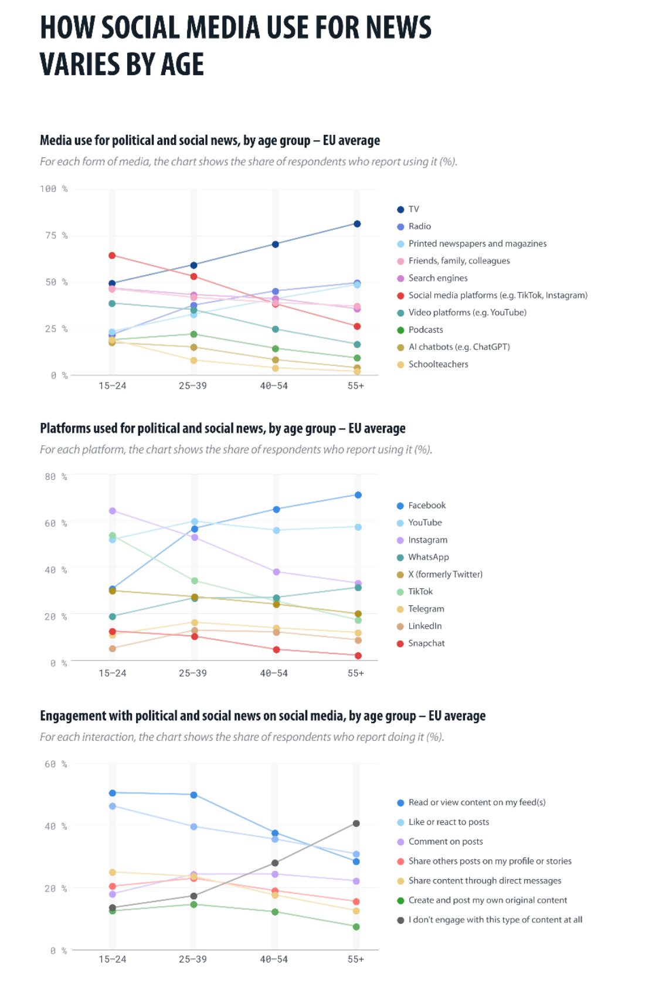
How Social Media Use For News Varies By Age. Reprinted from data.europa.eu (2026b). Data from European Parliament (2025).
The figure relies on position and slope, and slope is a lower-ranked perceptual task. It's cluttered, and many points are occluded (for example, several converge at 25–39 in the engagement chart). The connecting lines imply continuity even though age is an ordinal grouping, and they add ink that carries no information.
Each chart uses 7–10 hues, but hue works well for only about 7 categories (Healey, 1996). The source data includes significance tests, but the figure never shows them. The y-axes are also inconsistent across charts (0–100%, 0–80%, 0–60%).
Diagnosis: comparisons across age groups, the whole point of the figure, are buried under lines, overlapping points, and too many hues.
Iteration
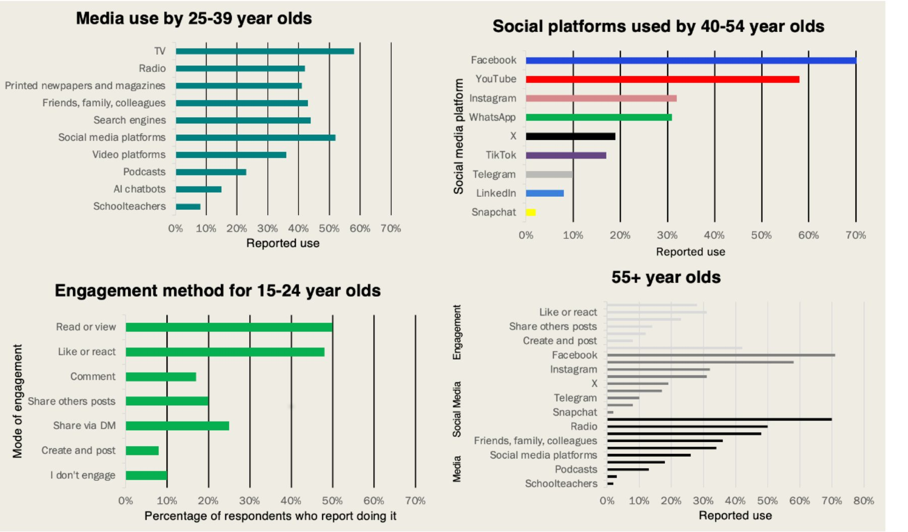
Early redesign prototype designed in Excel.
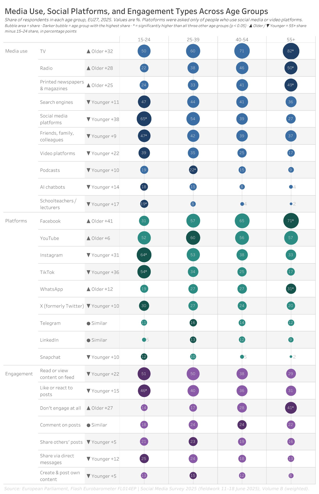
Early Tableau version: a single stacked column that required scrolling.
The prototype removed the crossing lines and occlusion and used a consistent axis. But splitting age groups into separate charts removed the comparison between ages, which was the figure's core function. The 55+ chart had no legend for its gray shades, and brand colors for each app made the hues compete with each other.
| Class feedback | Decision |
|---|---|
| Add a legend to the 55+ chart | Applied, stronger form Every item is labeled in its own row, so color only separates the three sections (media, platforms, engagement). |
| Change the scale to 0–100% | Adapted No traditional axis, but every bubble scales from zero on the same size scale across all three panels, so equal values look equal. |
| Separate charts lose age comparison | Applied All four age groups now sit side by side in one organized figure. |
Final Redesign (Interactive)
Hover over a bubble for the full survey question and exact share.
Open in Tableau Public ↗Design Pivots
The bubble matrix puts every age group in a single row, so comparisons and trends across ages are easy to read. I deliberately made it very different from the Case 3 redesign. Brand colors were dropped for one hue per section. Area ranks below position, so every bubble is labeled with its exact value. The three sections went from a stacked column that needed scrolling to side-by-side panels, so the whole figure fits on one screen.
Other refinements: darker bubbles mark the age group with the highest share in each row. Significance asterisks come from the source data. Trend arrows show the 55+ minus 15–24 difference. Values of 5 or less sit outside their bubbles, and alternating row shading separates the rows. The subtitle also notes that only social media users were asked about platforms, which the original never mentioned.
Design Concepts Applied
Area is the primary perceptual task, starting at zero and sharing one scale across all three groups. Value labels make up for area's weaker accuracy, and darker bubbles make each row's maximum salient. Clutter dropped once the connecting lines were removed, and one hue per section means no legend is needed. The trend arrows give a redundant cue for youngest vs. oldest. Gestalt proximity and enclosure come from the aligned columns and row shading. The light row shading adds some ink, but I kept it because it helps readers follow each row.
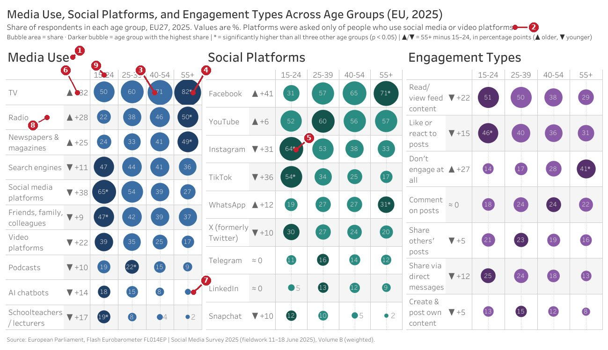
- Three sections placed side by side
- Platform data only from social media / video platform users
- Bubble area encodes share
- Darker bubbles encode the largest share in a row
- Asterisk: age group significantly higher than all others
- Up / down arrows show age trend in a row
- Numbers too small for a bubble placed outside
- Alternating row shading for separation
- Age header
Why the Redesign Is Better
Gained
All 26 items and 4 age groups appear without clutter or occlusion. A youngest-vs-oldest metric shows at a glance which media (like TV or TikTok) skew young or old, and media, platforms, and engagement now share one unified figure.
Trade-off
It uses area instead of the more accurate position. Exact value labels on every bubble make up for that.
Summer Tourism Concentration
The original shows the share of annual guest nights that fall in June–August (2023) for each European NUTS 2 region, along with each region's location and relative size.
The Original & Critique
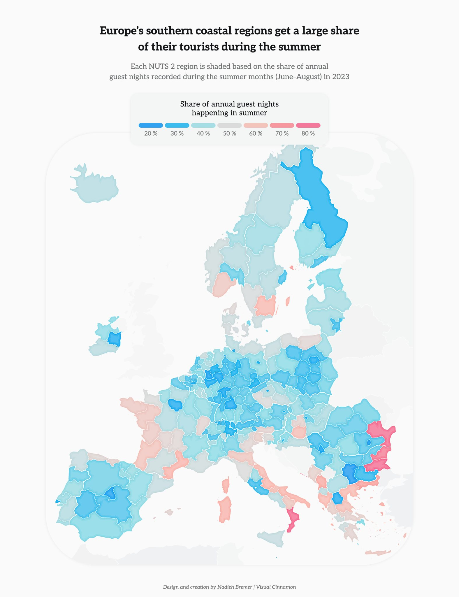
Europe's southern coastal regions get a large share of their tourists during the summer. Reprinted from data.europa.eu (2025). Data from Eurostat (2026c).
The map relies only on hue and saturation, both low-ranked perceptual tasks, and neighboring colors change how each other are perceived. The diverging palette (blue → gray → pink) implies a meaningful midpoint around 50%, but summer share has no natural midpoint. Large regions dominate visually, so small Mediterranean coastal regions with high summer shares get lost.
Regions that aren't next to each other can't be compared without a common scale. Region names, country membership, and borders are all missing, and that's useful information the data-ink ratio says belongs on the map. Values appear only as ranges, never as exact numbers.
Diagnosis: two weak perceptual channels, no common scale, and missing context (country names, borders, exact values).
Iteration
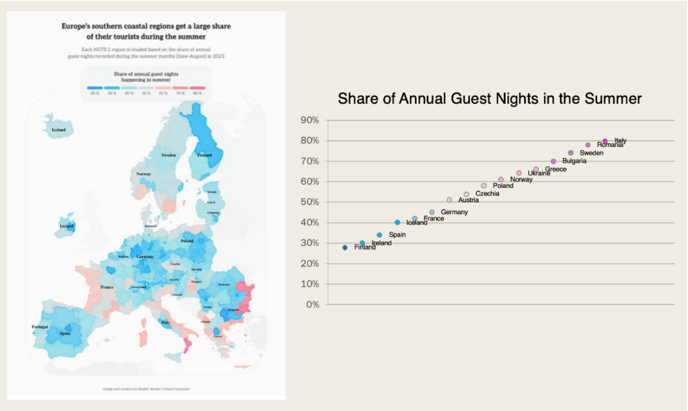
Early redesign prototype designed in Excel.
The prototype added an aligned scale next to the map for country-to-country comparison. But it used approximate country-level values and lost all regional detail. The horizontal layout crowded the country names, and it kept the original diverging palette.
| Class feedback | Decision |
|---|---|
| Plot NUTS 2 regions, not just countries | Applied Every region is plotted, grouped by country. |
| Turn the dot plot vertical | Applied Values run horizontally and countries vertically, so names are easier to read. |
| Change the scale to 0–100% | Not applied The data spans 22–77%, and a dot plot encodes position, so a 20–80% axis and a 25–65% color range keep differences visible. |
Final Redesign (Interactive)
Hover over a region on the map or the dot plot to highlight it in both views and see its name, country, and exact share.
Open in Tableau Public ↗Design Pivots
The diverging red-gray-blue palette became a sequential warm palette running from light yellow to dark red. I first considered a separate color scale for each country, but chose a Europe-wide scale because comparing regions across Europe matters more than comparing them within one country. Subtle black country borders replaced the prototype's country names, which added clutter. Region names are available on hover instead (e.g. Toscana, Italy).
The dot plot uses jitter so regions with similar values don't stack and every dot stays selectable. Light gray range bands show each country's min–max, and median ticks allow within- and between-country comparison. A dashed Europe-wide line adds a benchmark. The map and dot plot share the same color gradient, so it works as a stepped legend in 5-point increments. Non-European land is grayed out so Europe stands out.
Design Concepts Applied
The dot plot uses position along a common scale to fix the original's color-only encoding, and the sequential saturation is easier to read than the diverging hues. Consistent color links the two views. Borders and range bands act as Gestalt enclosure, grouping regions by country. Names and exact values appear only on hover, which reduces clutter. Countries are ordered by median share, highest at the top.
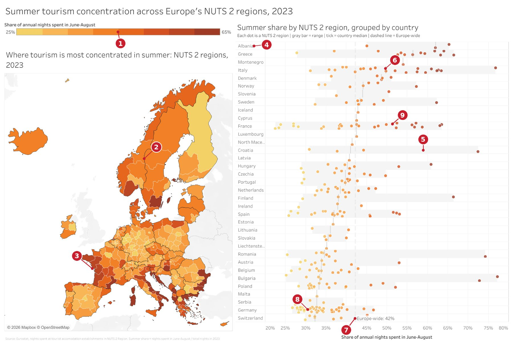
- Gradient legend: 8 steps of 5 points, 25–65%
- Country borders
- Europe-wide color scale shared across countries
- Countries ordered by median value
- Gray range band for each country
- Median tick for each country
- Europe-wide summer share rate
- Jitter prevents dot occlusion
- Dots colored to match the map
Why the Redesign Is Better
Gained
The map shows where regions are, and the dot plot shows exact, ordered values. Variation within a country is now visible (Croatia ranges from 31% to 72%). Regions can be compared side by side, and country membership is clear.
Trade-off
Two linked views take more space and longer to read than one map. In return, readings are more accurate and comparisons are easier.
What Carried Across All Three
The originals shared the same problems: low-ranking perceptual tasks, clutter, and high-ranking tasks used poorly. The redesigns shared solutions too.
Aligned position first
Position along a common scale was the primary encoding wherever possible.
Area, but labeled
When area was the right choice (Case 2), exact value labels made up for its lower accuracy.
Salient benchmarks
EU averages, row maximums, medians, and Europe-wide lines guide the eye to comparisons.
Higher data-ink ratio
Fewer legends, lines, and hues, with detail moved into Tableau tooltips.
My prototypes lost some of the originals' information and added their own clutter, but iteration fixed both in the final designs. Class feedback mainly shaped the color choices, the addition of NUTS 2 regions, and the dot plot's orientation. I didn't apply the 0–100% scale suggestion where a chart encodes position rather than length.
Limitations: Case 2 uses area, which is less accurate than position, and Case 3 uses two linked graphs that take more space and reading time. Overall, each final redesign is much easier to decode than its original.
Sources
- Cleveland, W. S., & McGill, R. (1984). Graphical perception: Theory, experimentation, and application to the development of graphical methods. Journal of the American Statistical Association, 79(387), 531–554. https://doi.org/10.1080/01621459.1984.10478080
- Cleveland, W. S., & McGill, R. (1985). Graphical perception and graphical methods for analyzing scientific data. Science, 229(4716), 828–833. https://doi.org/10.1126/science.229.4716.828
- data.europa.eu. (2025, July 31). Leisure in Europe: Insights from open data. Publications Office of the European Union. https://data.europa.eu/en/publications/datastories/leisure-europe-insights-open-data
- data.europa.eu. (2026a, February 11). Living with disability in Europe: What open data shows. Publications Office of the European Union. https://data.europa.eu/en/publications/datastories/living-disability-europe-what-open-data-shows
- data.europa.eu. (2026b, June 10). Social media use in the EU: From countries to generations. Publications Office of the European Union. https://data.europa.eu/en/publications/datastories/social-media-use-eu-countries-generations
- European Parliament. (2025). Flash Eurobarometer FL014EP: Social media survey 2025 [Data set]. data.europa.eu. https://data.europa.eu/data/datasets/s3592_fl014ep_eng?locale=en
- Eurostat. (2026a). Disability employment gap by level of activity limitation and sex (tepsr_sp200) [Data set]. Retrieved Sept. 17, 2026, from https://data.europa.eu/data/datasets/tbrhqm5vm0zrcz3arcfg?locale=en
- Eurostat. (2026b). Employment rate by citizenship (sdg_08_30a) [Data set]. Retrieved Sept. 17, 2026, from https://data.europa.eu/data/datasets/xr3lnpisncskxmdydwpcw?locale=en
- Eurostat. (2026c). Nights spent at tourist accommodation establishments by month and NUTS 2 region (from 2020 onwards) (tour_occ_nin2m) [Data set]. Retrieved Sept. 17, 2026, from https://ec.europa.eu/eurostat/databrowser/view/TOUR_OCC_NIN2M__custom_3923847/bookmark/table?lang=en&bookmarkId=f64e2e84-bda9-424e-a4aa-e0822d8bbffd&page=time:2021
- Eurostat. (n.d.). Overview – NUTS – Nomenclature of territorial units for statistics. European Union. Retrieved October 4, 2026, from https://ec.europa.eu/eurostat/web/nuts/overview
- Healey, C. G. (1996). Choosing effective colours for data visualization. In Proceedings of the Seventh Annual IEEE Visualization '96 (pp. 263–270). IEEE. https://doi.org/10.1109/VISUAL.1996.568118
- Tufte, E. R. (2001). The visual display of quantitative information (2nd ed.). Graphics Press.